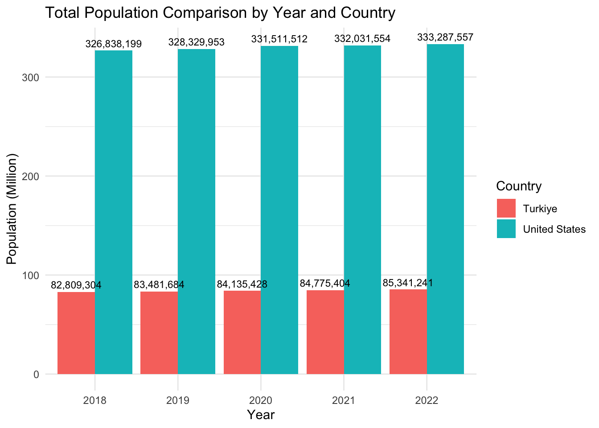
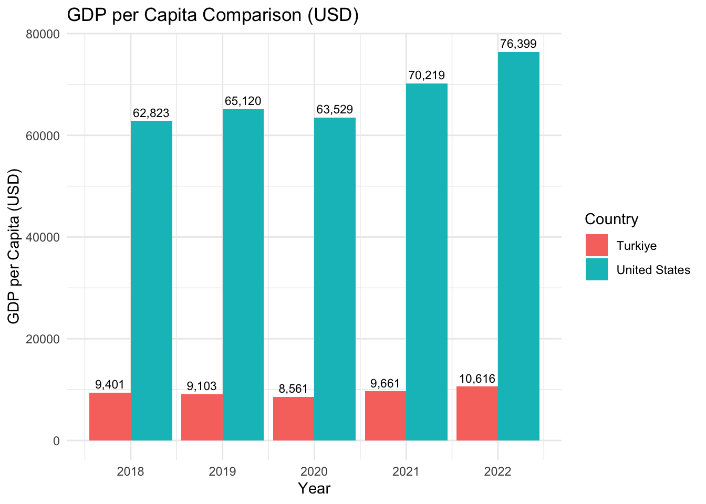
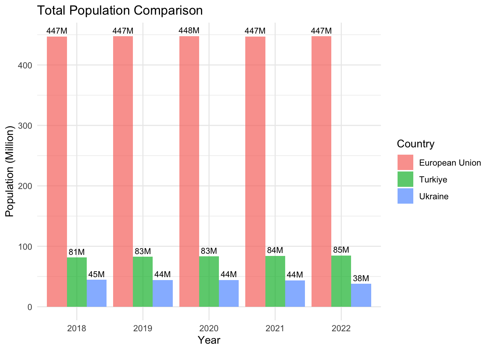
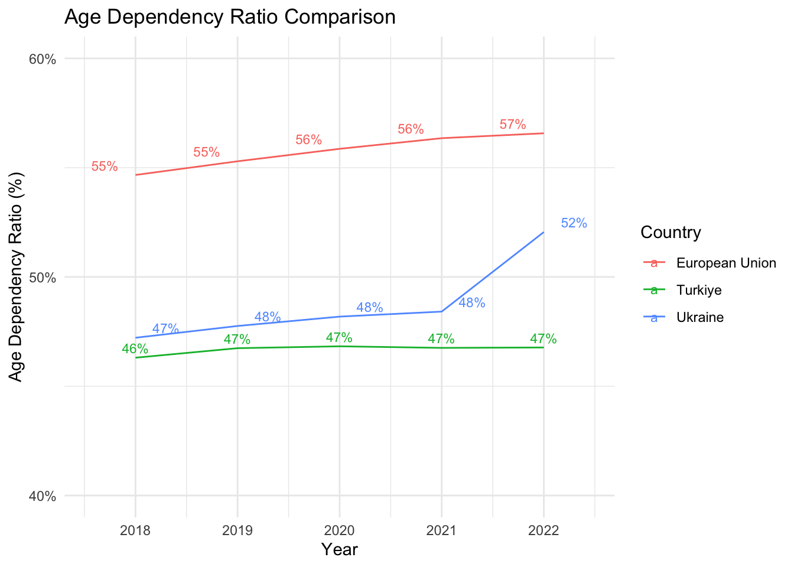
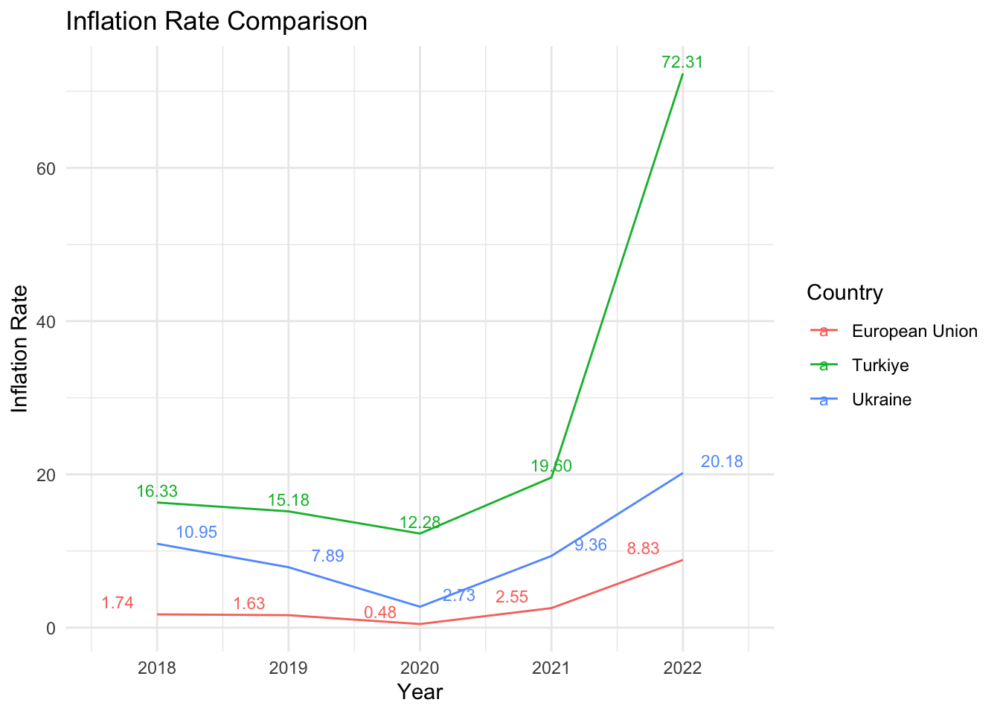
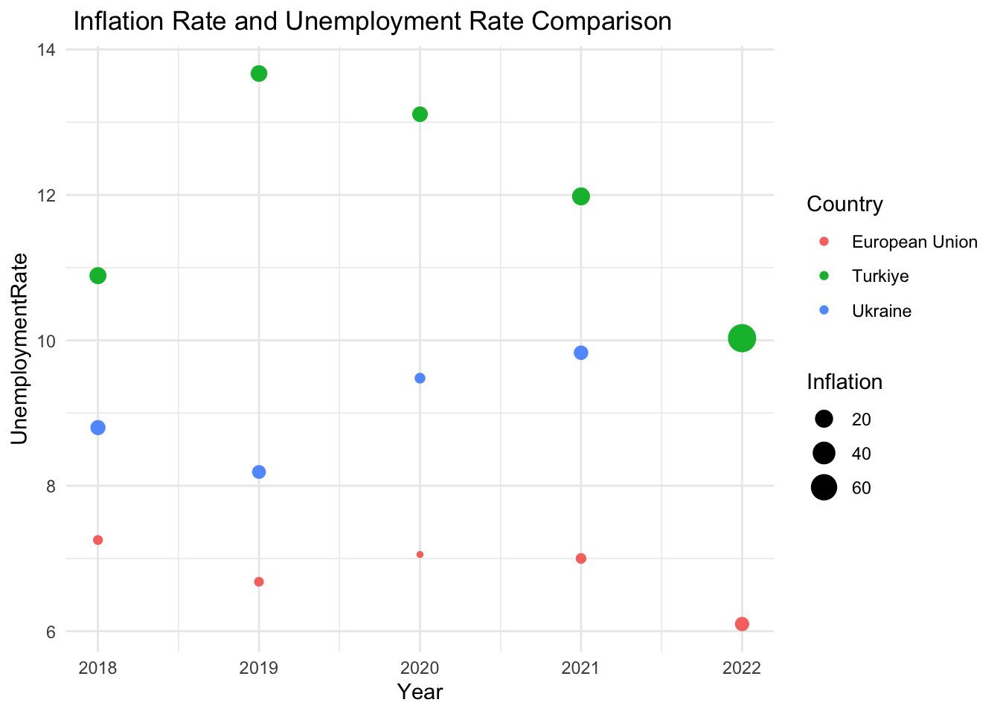

4 World Development Indicators - USA vs Turkey: Exploratory Data Analysis
4.1 Introduction:
In this Exploratory Data Analysis (EDA), we compared key indicators for the USA and Turkey using the World Development Indicators (WDI) dataset. The analysis focused on the years between 2018 and 2023.
4.2 Description of Selected Indicators:
4.2.1 Total Population:
Total population is the sum of all residents regardless of age.
4.2.2 GDP per Capita:
Gross Domestic Product (GDP) per capita represents the average economic output per person.
4.2.3 Age Dependency Ratio:
The age dependency ratio is the ratio of dependents (those aged 0-14 and 65+) to the working-age population (15-64).
The Consumer Price Index (CPI) measures the average change over time in the prices paid by urban consumers for a market basket of consumer goods and services. This indicator represents the annual growth rate of CPI.
4.2.5 Unemployment, Total (% of Labor Force):
Total unemployment is the percentage of the labor force that is unemployed but actively seeking employment.
4.2.6 Labor Force Participation Rate, Female (% of Female Population Ages 15+):
The labor force participation rate for females represents the percentage of the female population ages 15 and older that is economically active.
4.2.7 Labor Force Participation Rate, Male (% of Male Population Ages 15+):
The labor force participation rate for males represents the percentage of the male population ages 15 and older that is economically active.
4.3 Load Libraries and Packages
The libraries used in our analysis are given below:
Country Year Population GdpPerCapita AgeDependancyRatio Inflation
1 Turkiye 2018 82809304 9400.836 46.30621 16.332464
2 Turkiye 2019 83481684 9103.012 46.74186 15.176822
3 Turkiye 2020 84135428 8561.064 46.82812 12.278957
4 Turkiye 2021 84775404 9661.228 46.75508 19.596493
5 Turkiye 2022 85341241 10616.061 46.77459 72.308836
6 United States 2018 326838199 62823.309 52.22720 2.442583
7 United States 2019 328329953 65120.395 52.73635 1.812210
8 United States 2020 331511512 63528.634 53.22089 1.233584
9 United States 2021 332031554 70219.472 53.66160 4.697859
10 United States 2022 333287557 76398.592 54.05367 8.002800
UnemploymentRate FemaleLaborRate MaleLaborRate
1 10.890 34.037 72.434
2 13.670 34.215 71.761
3 13.110 30.767 67.998
4 11.980 32.762 70.135
5 10.030 34.167 71.116
6 3.900 56.497 68.449
7 3.670 56.885 68.559
8 8.050 55.700 67.116
9 5.350 55.588 67.043
10 3.611 56.459 67.511
4.4 Key Findings:
4.4.1 Total Population Comparison:
Both the USA and Turkey experienced steady population growth between 2018 and 2023. The USA had a larger total population compared to Turkey throughout the period.
Attaching package: 'dplyr'
The following objects are masked from 'package:stats':
filter, lag
The following objects are masked from 'package:base':
intersect, setdiff, setequal, union

4.4.2 GDP per Capita Comparison:
The USA consistently exhibited a higher GDP per capita compared to Turkey. Both countries showed variations in GDP per capita over the years.

4.4.3 Age Dependency Ratio Comparison:
The age dependency ratio in Turkey was higher than in the USA, indicating a relatively larger proportion of dependents.
4.4.4 Inflation Rate Comparison:
Inflation rates fluctuated in both countries, with specific years potentially warranting further investigation.

4.4.5 Inflation and GdpPerCapita Change Over Years:
The provided code conducts an analysis of the change in Inflation and GDP per Capita over the years for two countries, Turkey (TUR) and the United States (USA). The data is first processed to calculate the percentage change in both Inflation and GDP per Capita compared to the previous year. Two line charts are then generated and displayed vertically.
The Unemployment Rate Comparison analysis reveals that, over the specified years (2018-2023), the USA consistently maintained lower unemployment rates compared to Turkey. The line chart visually depicts the annual fluctuations in the unemployment rates for both countries, with the USA consistently positioned below Turkey. This suggests a relatively more stable employment environment in the USA during the analyzed period, emphasizing the difference in labor market conditions between the two countries.

4.4.7Female Labor Force Participation Rate Comparison:
The labor force participation rate for females showed variations but tended to be higher in the USA compared to Turkey.

4.4.8Male Labor Force Participation Rate Comparison:
The labor force participation rate for males exhibited fluctuations, with both countries experiencing changes over the years.

4.4.9Unemployment Rate and Female&Male Force Participation Rate Change Over Years
The provided code conducts an analysis of the change in Unemployment Rate andFemale&Male Force Participation Rate over the years for two countries, Turkey (TUR) and the United States (USA). The data is first processed to calculate the percentage change in both Inflation and GDP per Capita compared to the previous year. Three line charts are then generated and displayed vertically.
Trend Analysis: Explore trends in each indicator over the specified period.
Correlation Analysis: Investigate potential correlations between different indicators.
Regional Comparisons: Compare USA and Turkey indicators with each other.
This Explatory Data Analysis provides an initial overview, and further investigations and statistical tests will be conducted for a more in-depth understanding.